1. Supercomputing and Scientific Computing
Overview
Welcome to the first unit of the HIPC course.
This unit will cover:
- The (selected) origins of scientific computing
- A history of supercomputing
- The underlying theory of parallel computing
- The uses of scientific computing
A (very) Brief History of Scientific Computing
Improving computational performance has been a long-standing goal of many scientists and mathematicians for thousands of years, even before the advent of the modern computer. Devising more efficient algorithms to solve computational problems can reduce the time taken to reach a solution by many orders of magnitude, meaning calculations relating to natural phenomena can be performed in hours/minutes/seconds rather than weeks or months.
The earliest known examples of algorithm optimisation come from Babylonian mathematics. Tablets dating back to around 3000 B.C.E. show that the Babylonians had algorithms that today read very much like early computer programs. These algorithms allowed the Babylonians to efficiently and accurately calculate the results of divisions and square roots, among other things.
For example, the Babylonian devised an algorithm for calculating square roots that is very similar to the Newton-Raphson method, but predates it by 4000 years.
Further Reading
- Donald E. Knuth. 1972. Ancient Babylonian Algorithms. Commununications of the ACM 15, 7, 671-677.
A more modern example of algorithmic optimisation was used during the Manhattan Project at the Los Alamos National Laboratory (LANL). Richard Feynman devised a method for distributing the calculations for the energy released by different designs of the implosion bomb. Through Feynman’s use of pipelining, his team of human computers were able to produce the results to 9 calculations in only 3 months, where 3 calculations had previously taken 9 months to produce – representing a 9$\times$ speed-up. Distributed computation in this manner is one form of what is now commonly called parallel computation.
Further Reading
- Tony Hey. 1999. Richard Feynman and Computation, Contemporary Physics, 40, 4, 257-265.
Scientific computing and numerical simulation are now indispensable tools in many areas of science and engineering. Complex simulations allow scientists to test their theories in domains where physical experimentation would be prohibitively costly, impractical, or dangerous. As a result, computational methods have joined theory and experiment as central pillars of scientific investigation.
History of Supercomputing
In the beginning…
The first general-purpose computer was the Electronic Numerical Integrator and Computer (ENIAC), built in 1939. The machine could perform between 300 and 500 floating-point operations per second (FLOP/s). Due to the prevalence and importance of floating-point operations in modern day science applications, the FLOP rate is the standard way in which modern supercomputer performance is assessed.

Figure 1: ENIAC – the first programmable, electronic, general-purpose digital computer
The era of the modern supercomputer began in the 1960s with the release of the CDC 6600. Designed by Seymour Cray for the Control Data Corporation (CDC), the CDC 6600 was the first mainframe computer to separate many of the components typically found in CPUs of the era into separate processing units. This resulted in the CPU being able to use a reduced instruction set, simplifying its design, and allowing operations usually performed by the CPU (such as memory accesses and I/O) to instead be handled by dedicated peripheral processors in parallel. Consequently, the CDC 6600 was approximately three times faster than its predecessor, the IBM 7030, and the machine held the record for the world’s fastest computer from 1964 to 1969, performing approximately 1 million floating-point operations per second (1 MFLOP/s).
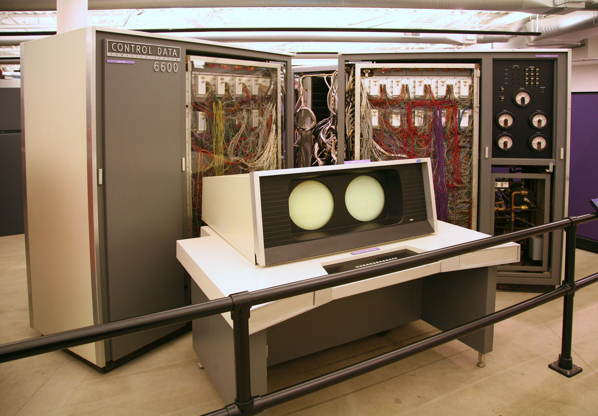
Figure 2: CDC 6600 – the first commercially successful supercomputer
The Cray Era
In 1972, following financial difficulties at CDC, Seymour Cray left to form his own company, Cray Research Inc.
Following three years of development, in 1975, Cray announced the first Cray Research supercomputer, the 80 MHz Cray-1. When it was released the following year, the Cray-1 was ten times faster than competing machines, but cost up to $10 million and drew 115 kW of power. The excitement surrounding the machine was such that a bidding war broke out between Los Alamos National Laboratory (LANL) and Lawrence Livermore National Laboratory (LLNL) to acquire the first machine, with LANL ultimately proving successful.
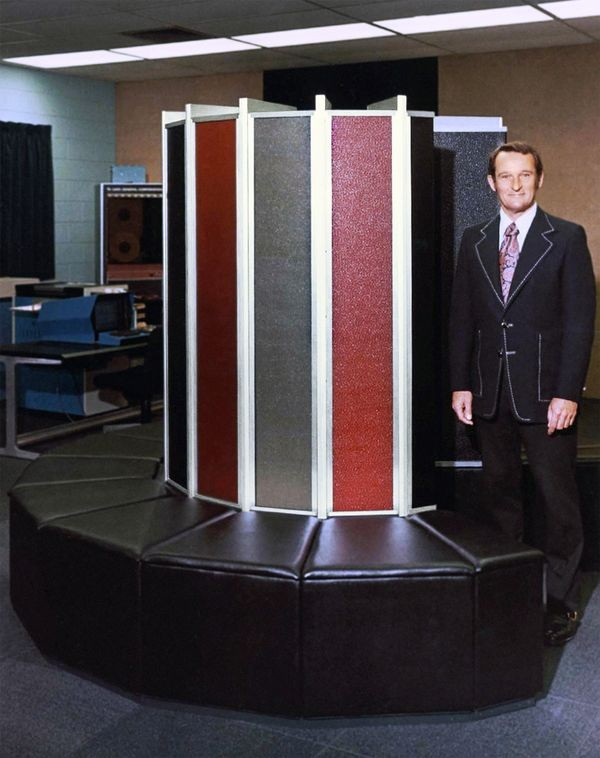
Figure 3: Seymour Cray with a Cray-1 supercomputer
The Cray-1 was the first Cray machine to use integrated circuites (ICs), and contained over 60 miles of wire, with no segment longer than 3 inches to minimise signal delays (hence the curved design!). The Cray-1 was the first supercomputer to successfully implement a vector processor design, and was capable of performing 160 million floating-point operations per second (i.e. 160 MFLOP/s).
Having initially believed they would sell perhaps a dozen systems, and having priced the system accordingly, over 100 were sold.
Between 1976 and 1985, the iconic design of the Cray-1 was reused for the upgraded Cray-1A, Cray-1S and Cray-1M systems, with each system improving the memory capacity or processor performance. In 1983, the Cray X-MP was announced as a “cleaned up” Cray-1 system with a quad-processor. Capable of 800 MFLOP/s, it was the world’s fastest computer from 1983 to 1985.
In 1985, the Cray X-MP was replaced as the fastest computer by the Cray-2, the first supercomputer of the Gigascale Era (capable of performing 1.9 GFLOP/s).
The Cray-2 was a quad-processor, liquid cooled computer. The system was cooled by Fluorinert, which was pumped around the system under pressure, and then cooled outside the processor box in a unique “waterfall” cooling system. This lead to a number of jokes (“no fishing” signs, etc.) and the system being nicknamed “Bubbles”.
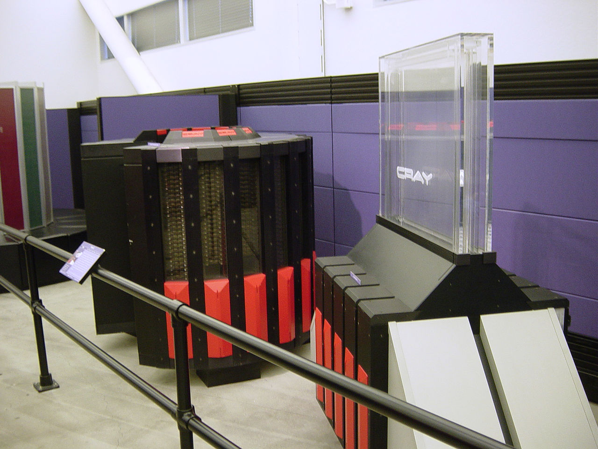
Figure 4: NERSC’s Cray-2 and Cooling “waterfall”
Unfortunately, the Cray-2 had difficulties delivering its peak performance, which led to other Cray machines outselling the Cray-2.
In 1988, the Cray Y-MP displaced the Cray-2 as the world’s fastest computer. The Cray Y-MP was the successor to the Cray X-MP, and was available with two, four or eight vector processors. Each processor was capable of 333 MFLOP/s, and thus the system had a maximum performance of 2.66 GFLOP/s.
Multi-Processing and the Beowulf Cluster
Until 1990, the fastest systems typically had very few processors, with most performance increases coming about through vectorisation or clock speed improvements. Remember, the Cray Y-MP only had up to 8 processors! In the 90s this approach changed dramatically, with the emergence of many-processor systems – a now ubiquitous approach.
In 1993, Fujitsu’s Numerical Wind Tunnel (NWT) became the fastest supercomputer in the world, doing so using 140 vector processors (later upgraded to 167). It achieved a maximum performance of 124 GFLOP/s running the LINPACK benchmark, with a theoretical maximum performance of 235.8 GFLOP/s. Each processor had 4 separate pipelines, and could perform two fused multiply-add (FMA) instruction for 1.7 GFLOP/s per processor.
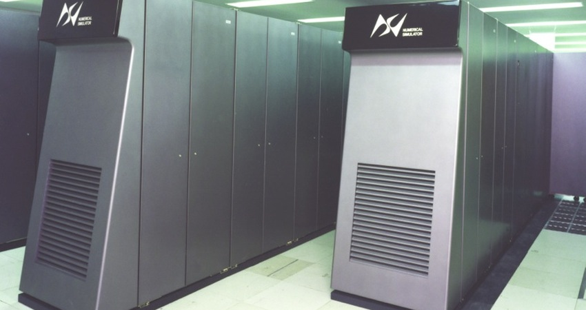
Figure 5: Numerical Wind Tunnel
The Numerical Wind Tunnel was the second supercomputer to top the newly created TOP500 rankings (following the CM/5 at LANL). Recognising a need to generate meaningful statistics about supercomputers, Hans Meuer (University of Mannhein) joined with Jack Dongarra (University of Tennessee), and later Erich Strohmaier (National Energy Research Scientific Computing Center) and Horst Simon (Lawrence Berkeley National Laboratory), in creating the TOP500 supercomputer rankings. The TOP500 rankings are released twice a year, at the International Supercomputing Conference (ISC) in June, and then at the Supercomputing Conference (SC) in November. The rankings are based on the performance achieved running Jack Dongarra’s LINPACK benchmark, which solves a dense system of linear equations, $Ax = b$. Where previously, supercomputers were ranked based on the theoretical maximum performance (i.e. clock speed $\times$ max FLOPs per clock cycle $\times$ number of CPUs), they could instead be ranked based on the achieved performance on a “representative” problem – including effects such as memory performance, interconnect performance, etc.
The third machine to reach the #1 ranking was the Intel Paragon XP/S140 system installed at Sandia National Laboratories. While it only persisted for a single TOP500 list, before being replaced by an upgraded NWT, it was Intel’s first #1 ranked machine, and was a Multiple-Instruction, Multiple-Data (MIMD) machine, a mainstay of modern HPC.
Intel’s next foray to the top of the rankings was in 1997, when they broke the TeraFLOP barrier with ASCI Red, achieving 1.06 TFLOP/s on the LINPACK benchmark. ASCI Red could perhaps be considered one of the first Beowulf clusters – one that is mostly made of commercially available hardware.
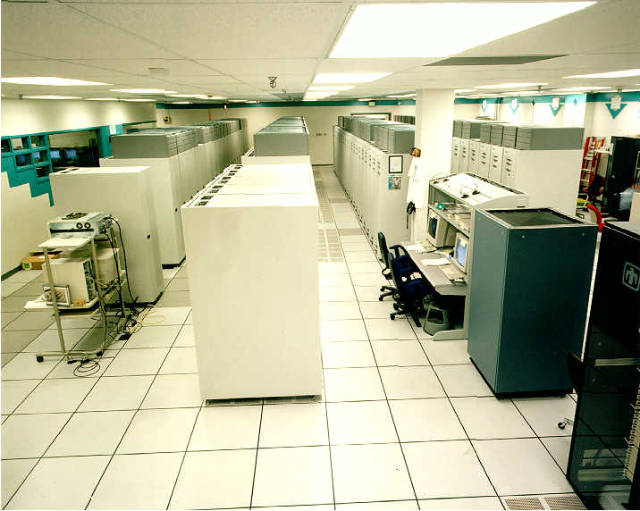
Figure 6: ASCI Red inside Sandia National Laboratories
ASCI Red consisted of 104 cabinets, with 76 compute nodes in each cabinet alongside switches and storage (total of almost 8,000 compute CPUs). Each compute node had an Intel Pentium Pro processor running at 200 MHz. In 1999, the processors were upgraded to specially packaged Pentium II Xeon processors, pushing its performance to 3.1 TFLOP/s.
ASCI Red held on to the top spot until 2000, when it was briefly displaced by IBM’s ASCI White system, installed at LLNL.
In 2002, ASCI White’s performance was surpassed considerably by the Earth Simulator. With a LINPACK performance of 35.86 TFLOP/s, Earth Simulator was almost five times faster than the previous #1 system. The system was developed for running global climate models to evaluate the effects of climate change by the Japan Aerospace Exploration Agency, the Japan Atomic Energy Research Institute, and the Japan Marine Science and Technology Center. It consisted of 640 nodes, with eight vector processors in each node, for a total of 5120 processors.
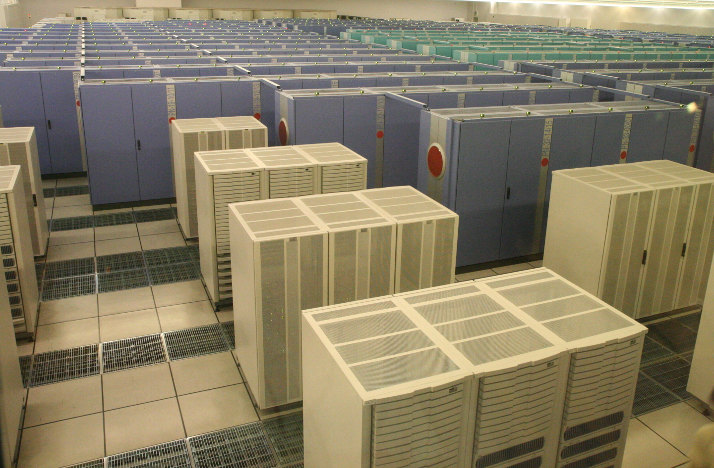
Figure 7: Earth Simulator
The title of fastest supercomputer in the world was taken back by the United States in November 2004, with the installation of IBM’s first BlueGene system at LLNL. Initially installed as a 16-rack system, LLNL’s BlueGene/L system took the title with an achieved performance of 70.72 TFLOP/s. The system was gradually expanded up to 104 racks, achieving 478 TFLOP/s in 2007.
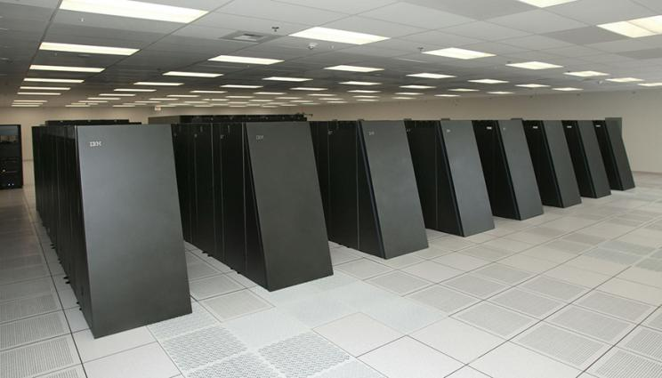
Figure 8: BlueGene/L
The BlueGene project was focussed on trading the speed of processors for lower power consumption, enabling the use of more processors in parallel. Each node of the BlueGene/L operated with two 700 MHz PowerPC 440 CPUs, with two nodes per compute card, 16 compute cards per node board, and 32 node boards per cabinet/rack. The nodes were interconnected with a three-dimensional torus interconnect, enabling low latency communication between compute nodes. In its largest configuration, LLNL’s BlueGene/L had a total of 212,992 cores.
The Petascale Era
In 2008 IBM Roadrunner became the first supercomputer to break the PetaFLOP/s barrier, achieving 1.02 PFLOP/s on the LINPACK benchmark.
In contrast to many of the the large homogeneous systems that came before, Roadrunner was an AMD Opteron powered system with IBM PowerXCell accelerators connected to each core, making it perhaps the first modern heterogeneous system. This heterogeneous approach has continued ever since, with a growing proportion of the fastest supercomputers in the world making use of highly-specialised computational accelerators (e.g. GPUs) alongside traditional multi-CPU hosts.
Roadrunner was displaced at the top of the rankings in 2010 by the Chinese supercomputer, Tianhe-1A (“Milk Way”) – the first Chinese system to achieve the #1 ranking. Tianhe-1A is a 7,168 node system, with each node featuring two Intel Xeon X5670 6-core processors and a single NVIDIA Tesla M2050 GPU, achieving 2.57 PFLOP/s.
In June 2011, Tianhe-1A was overtaken by the K-Computer – a Japanese 10 PFLOP/s homogeneous supercomputer, using Fujitsu SPARC64fx processors and a proprietary Torus Fusion (Tofu) interconnect.
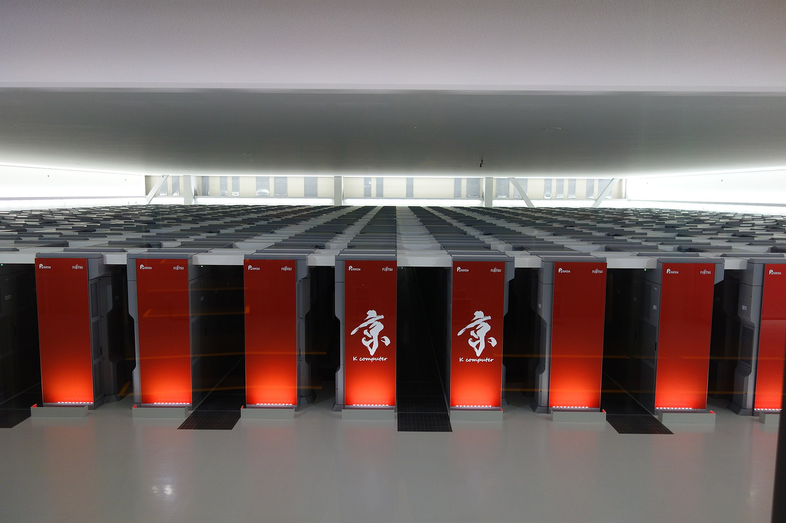
Figure 9: K-Computer
K-Computer comprised of 88,128 2.0 GHz eight-core processors, for a total of 705,024 cores, with each node being interconnected by Tofu’s six-dimensional mesh/torus topology. The system drew 10 MW of power (compared to the 115 kW of a Cray-1). Even when the system was decomissioned in 2018, it was still only 18th in the TOP500 list and achieved a performance efficiency of 93% (i.e. achieved performance vs. theoretical max) on LINPACK.
The United States regained the top spot in the TOP500 in June 2012 with the third iteration of the IBM BlueGene. IBM Sequoia was a BlueGene/Q system installed at LLNL, and achieved a peak performance of 17.17 PFLOP/s. Like previous BlueGene systems it achieved this performance using lower power, massively parallel processors – with 98,304 compute nodes, each with a 16-core IBM A2 processor, for 1,572,864 processor cores in total.
Sequoia’s position at the top was shortlived, being replaced in November 2012 by another US system. Titan was a supercomputer installed at Oak Ridge National Laboratory (ORNL), achieving a peak performance of 17.59 PFLOP/s. Similar to Tianhe-1A, it was a heterogeneous platform, consisting of 18,688 AMD Opteron CPUs in conjunction with an equal number of NVIDIA Tesla K20x GPUs.
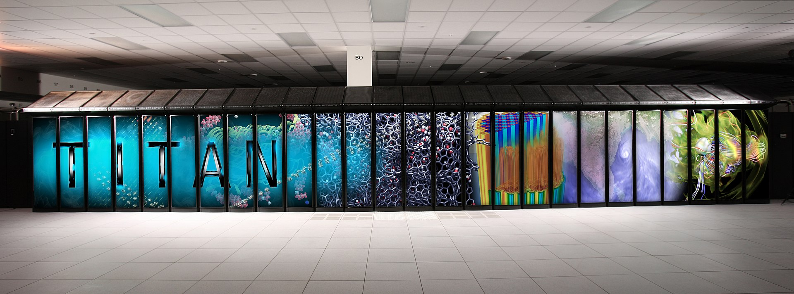
Figure 10: Titan
In June 2013, the Tianhe-2 system achieved 33.86 PFLOP/s, approximately twice the performance of Titan and Sequoia. It did so using Intel Xeon CPUs, alongside Intel’s Xeon Phi manycore co-processor architecture (Knights Corner).
China surpassed its own Tianhe-2 system in 2016 with the Sunway TaihuLight supercomputer, achieving 93 PFLOP/s with a custom Chinese-designed Sunway manycore CPU in 2016. The system consists of 40,960 processors, with each processor containing 256 processing cores.
The TOP500 crown returned to the United States in 2018, when the heterogeneous Summit supercomputer was installed at ORNL. Alongside Summit, the similarly architected Sierra, at LLNL, also took the #2 spot. Both Summit and Sierra are IBM systems, with IBM Power9 CPUs connected to NVIDIA V100 GPUs; in the case of Summit there are 2 CPUs and 6 GPUs per node, and in Sierra there are 2 CPUs and 4 GPUs per node. Summit can achieve a peak performance of 148 PFLOP/s, while Sierra can achieve 95 PFLOP/s.
In June 2020, the successor to the K-Computer took the TOP500 crown and retained it up to 2021. Fugaku is built with the Fujitsu A64FX microprocessor (the first ARM-based architecture to achieve the #1 ranking), with nodes interconnected with the Tofu interconnect. Similar to previous Japanese #1 supercomputers, Fugaku outperformed rival supercomputers considerably when installed, beating Summit and Sierra by almost three times. Currently, it has been able to achieve 450 PFLOP/s on the LINPACK benchmark. Alongside the TOP500 ranking, it was also the first supercomputer to top the Graph500, HPL-AI and HPCG rankings simultaneously.
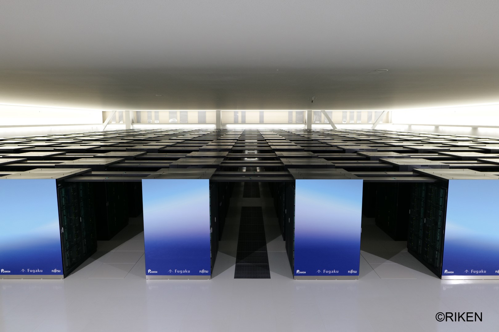
Figure 11: Fugaku
The Era of Exascale
We are now in the era of Exascale computing. The fastest machine in the world currently is Frontier, installed at ORNL. Frontier entered the TOP500 in June 2022, achieving 1.1 EFLOP/s. It is an HPE Cray system, consisting of 9,472 AMD EPYC CPUs and 37,888 AMD Radeon Instinct MI250X GPUs. While Frontier is the first system to pass the Exascale threshold, it certainly will not be the last, with numerous planned post-Exascale systems currently in development (or already operating without being publicly acknowledged).
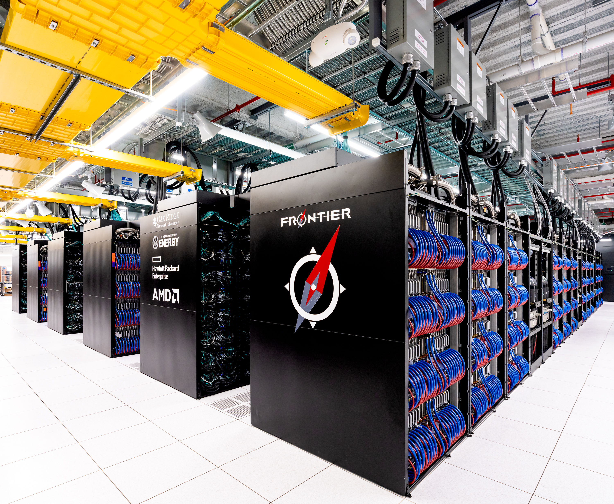
Figure 12: Frontier
Like previous leaps in HPC capability, Exascale computing will enable scientists to make new discoveries in material sciences, fusion energy, engineering, medicine, and many other fields.
Further Reading
The Top 500 (and other rankings)
As discussed in the previous section, supercomputers are typically ranked twice a year as part of the TOP500. Alongside the TOP500, there are a number of alternative rankings that provide supplementary information on supercomputer performance.
TOP500
The TOP500 was introduced by Hans Meuer and Jack Dongarra in 1993. Supercomputers are evaluated based on their floating-point operations (FLOPs) per second on the dense linear solver benchmark, LINPACK. The list is produced twice a year, at the International Supercomputing Conference in June, and at the Supercomputing Conference in November.
Since the TOP500 began tracking supercomputing performance, the performance of the #1 machine has approximately doubled every two years (thus following the consequence of Moore’s law, that the number of transistors in a dense integrated circuit will double approximately every two years).
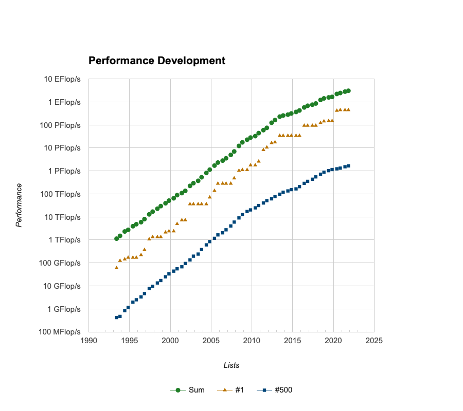
Figure 13: TOP500 supercomputer performance since 1993
Further Reading
Despite the prevalence (and perceived importance) of the TOP500, it has been noted that the LINPACK benchmark is heavily compute-bound, meaning that it is not necessarily representative of many of the scientific simulations that are executed on these systems. Achieving a PetaFLOP on LINPACK often translates to only tens of TeraFLOP/s on real applications. For this reason, a number of alternative rankings are available, each using different benchmarks, or supplementing LINPACK performance with other metrics.
GREEN500
The GREEN500 augments the TOP500 list by taking the performance data and the power consumption to calculate the FLOP/s/Watt. Consequently the top systems are usually smaller installations, with newer architectures. Frontier currently sits at #6 in the GREEN500, with a power efficiency of 52.23 GFLOP/s/Watt, whereas the current #1 achieves 65.09 GFLOP/s/Watt.
| Rank | TOP500 Rank | System | Cores | Rmax (TFlop/s) | Power (kW) | Power Efficiency (GFlops/watts) |
|---|---|---|---|---|---|---|
| 1 | 405 | Henri - Lenovo ThinkSystem SR670 V2, Intel Xeon Platinum 8362 2800Mhz (32C), NVIDIA H100 80GB PCIe, Infiniband HDR, Lenovo | 5,920 | 2.04 | 31 | 65.091 |
| 2 | 32 | Frontier TDS - HPE Cray EX235a, AMD Optimized 3rd Generation EPYC 64C 2GHz, AMD Instinct MI250X, Slingshot-11, HPE | 120,832 | 19.20 | 309 | 62.684 |
| 3 | 11 | Adastra - HPE Cray EX235a, AMD Optimized 3rd Generation EPYC 64C 2GHz, AMD Instinct MI250X, Slingshot-11, HPE | 319,072 | 46.10 | 921 | 58.021 |
| 4 | 15 | Setonix – GPU - HPE Cray EX235a, AMD Optimized 3rd Generation EPYC 64C 2GHz, AMD Instinct MI250X, Slingshot-11, HPE | 181,248 | 27.16 | 477 | 56.983 |
| 5 | 68 | Dardel GPU - HPE Cray EX235a, AMD Optimized 3rd Generation EPYC 64C 2GHz, AMD Instinct MI250X, Slingshot-11, HPE | 52,864 | 8.26 | 146 | 56.491 |
Table 1: The current top 5 GREEN500 supercomputers
Further Reading
HPCG List
Recognising the need for a new benchmark that is more representative of many scientific applications, Michael Heroux (Sandia National Laboratories) and Jack Dongarra proposed a new benchmark in 2013. The High Performance Conjugate Gradient (HPCG) benchmark is composed of computations and data accesses that are more commonly found in HPC applications, and therefore may provide a more reliable measure of a system’s potential performance.
The HPCG rankings are hosted (and announced) alongside the TOP500 and GREEN500 lists. The current #1 system is Fugaku, but in contrast to its 82% performance efficiency on LINPACK, it achieves just 3% efficiency on HPCG (with 16.0 PFLOP/s). While Exascale has been achieved with LINPACK, it is unlikely the Exascale barrier will be broken on HPCG for some time.
Further Reading
Graph500
While LINPACK and HPCG both measure performance in FLOP/s, there are a number of HPC applications that are less reliant on floating-point arithmetic. The Graph500 is an alternative ranking that is instead focussed on data intensive applications. The current Graph500 benchmark performs a concurrent breadth-first search and ranks systems based on the number of traversed edges per second (TEPS).
The current #1 system is Fugaku, capable of performing 102,956 GTEPS.
| Rank | Machine | Vendor | Installation Site | Location | Country | Year | Nodes | Cores | Scale | GTEPS |
|---|---|---|---|---|---|---|---|---|---|---|
| 1 | Supercomputer Fugaku | Fujitsu | RIKEN Center for Computational Science (R-CCS) | Kobe Hyogo | Japan | 2020 | 158976 | 7630848 | 41 | 102956 |
| 2 | Pengcheng Cloudbrain-II | HUST-Pengcheng Lab-HUAWEI | Pengcheng Lab | ShenZhen | China | 2022 | 488 | 93696 999424 | 40 | 25242.9 |
| 3 | Sunway TaihuLight | NRCPC | National Supercomputing Center in Wuxi | Wuxi | China | 2015 | 40768 | 10599680 | 40 | 23755.7 |
| 4 | Wisteria/BDEC-01 (Odyssey) | Fujitsu | Information Technology Center The University of Tokyo | Kashiwa Chiba | Japan | 2021 | 7680 | 368640 | 37 | 16118 |
| 5 | TOKI-SORA | Fujitsu | Japan Aerospace eXploration Agency (JAXA) | Tokyo | Japan | 2020 | 5760 | 276480 | 36 | 10813 |
Table 2: Graph500 in November 2022
Further Reading
HPL-MxP
In recognising the recent emergence of AI workloads on HPC systems, the HPL-MxP rankings were introduced in 2019 (as HPC-AI initially, before becoming the HPC-MxP Mixed Precision Benchmark in 2022). The HPL-MxP benchmark strives to unite traditional HPC workloads with AI workloads, and it does this by performing a combination of LINPACK-like double-precision calculations alongside low-precision AI-like calculations. The rankings are reported in FLOP/s, but are not limited to double-precision operations like LINPACK and HPCG.
The current #1 system is Frontier, achieving 6.861 ExaFLOP/s on HPL-MxP.
Further Reading
Parallel Computation
In 1966, Michael Flynn proposed a classification system for computer architectures. Flynn’s Taxonomy has been used as the basis for the design of all modern processors since.
Flynn’s Taxonomy
In Flynn’s 1972 paper, “Some Computer Organizations and Their Effectiveness”, four classifications were provided based on the number of concurrent instruction streams and data streams that were available in hardware.
Single instruction stream, single data stream (SISD)
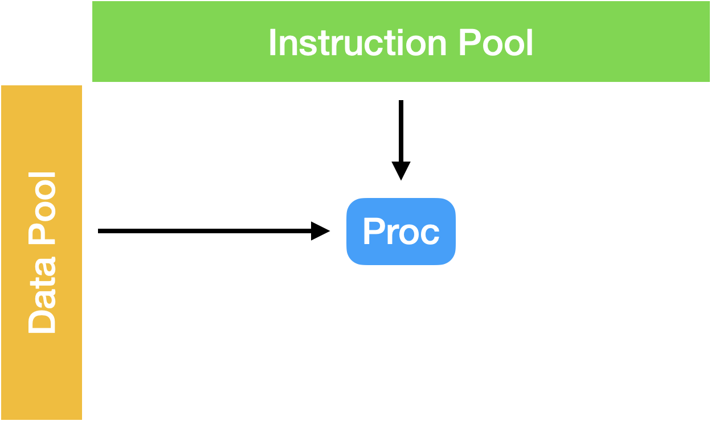
Each processor fetches a single instruction and operates on a single data stream.
Single instruction stream, multiple data streams (SIMD)
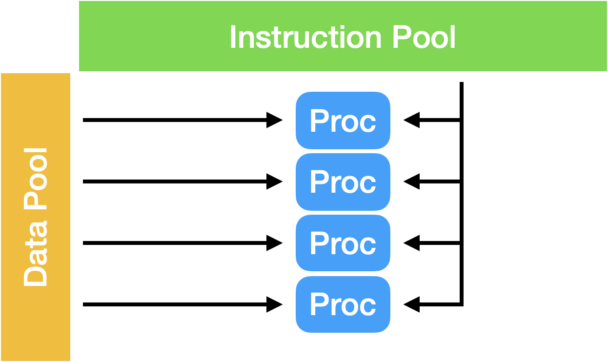
Each processor applies the same instruction on multiple pieces of data simultaneously.
Multiple instruction streams, single data stream (MISD)
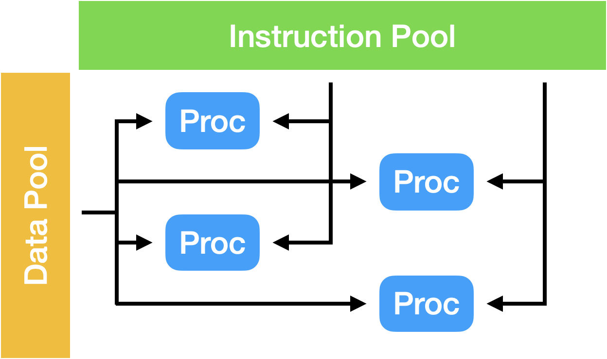
Each processor applies potentially different instructions on a single piece of data simultaneously.
Multiple instruction streams, multiple data streams (MIMD)
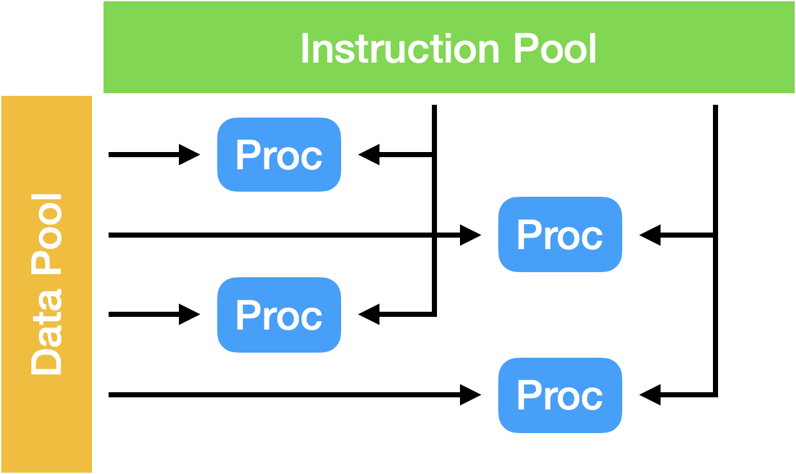
Each processor applies potentially different instructions to different pieces of data simultaneously.
Almost all modern CPU cores now operate in a SIMD fashion, and all modern CPUs operate in a MIMD fashion (i.e. each individual core can perform SIMD operations, and each processor is a collection of independent cores). Consequently almost all modern Supercomputers are based on a MIMD architecture.
Across a Supercomputer, this MIMD category may be further refined.
Single program, multiple data streams (SPMD)
Multiple autonomous processors simultaneously execute the same program, with each processor operating independently on a subtask. Unlike SIMD, operations are not necessarily executed in lock-step, instead there may be synchronisation points throughout the execution.
SPMD is the most common style of parallel programming, and is the style that this module will focus on most heavily.
An Example
A typical example of SPMD can be seen in Figure 14 below. In this example, a particle simulation is being performed in parallel. First the problem domain is divided into four and distributed to four processors. Each processor independently calculates the position of the particles in the next time step. The problem space can then be reconstructed to show the final state.
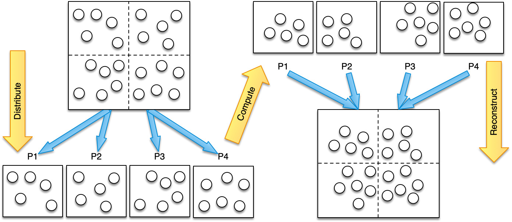
Figure 14: A parallelised particle simulation
Each processor subproblem could potentially make use of SIMD parallelism to calculate the movement of the particles in parallel on a processor, and by distributing the computation across processors, a SPMD approach is being used to provide parallel performance across a system.
Should any particles leave the domain of a particular processor, a communication phase may be necessary to move the particle to another process. Additionally, if a particle interacts with another particle not in its domain, a communication phase may be necessary to communicate this data. While each processor can operate independently of any other processors, any communication between processors will likely enforce some form of synchronisation (such that one processor does not get out of sync with the global time step).
The Laws of Parallel Computing
Now that we’ve discussed how applications may be parallelised across a system, its time to look at how much we might be able to gain, performance wise, through such parallelisations.
While this module will mostly deal with algorithms and applications that are well parallelisable, there are some algorithms that are inherently serial; and large HPC applications often contain some serial portions. These often represent a bottleneck to achieving good performance. We can therefore reason about the possible performance increases we can get through parallelisation in the presence of some necessary serialisation.
Amdahl’s Law
Amdahl’s law is a formula which gives the theoretical speedup of the execution of a task with an inherently serial portion. For example, if a program requires 10 hours to execute serially, and an hour of that runtime cannot be parallelised, then regardless of parallel efficiency, the application cannot run in less than an hour.
Amdahl’s law is usually written as:
\[S(s) = \frac{1}{(1-p) + \frac{p}{s}}\]where,
$S$ is the theoretical speedup
$s$ is the speedup of the parallelisable part of the application
$p$ is the proportion of the application that is amenable to parallelisation.
An Example
Given an application of which 40% of the execution may be amenable to parallelisation, and that parallelisation improves performance of that proportion by a factor of 2, Amdahl’s law states that the speed up will be:
\[S = \frac{1}{1 - 0.4 + \frac{0.4}{2}} = 1.25\]In other words, we could expect that by doubling the performance of 40% of the execution, our application will run 1.25$\times$ faster.
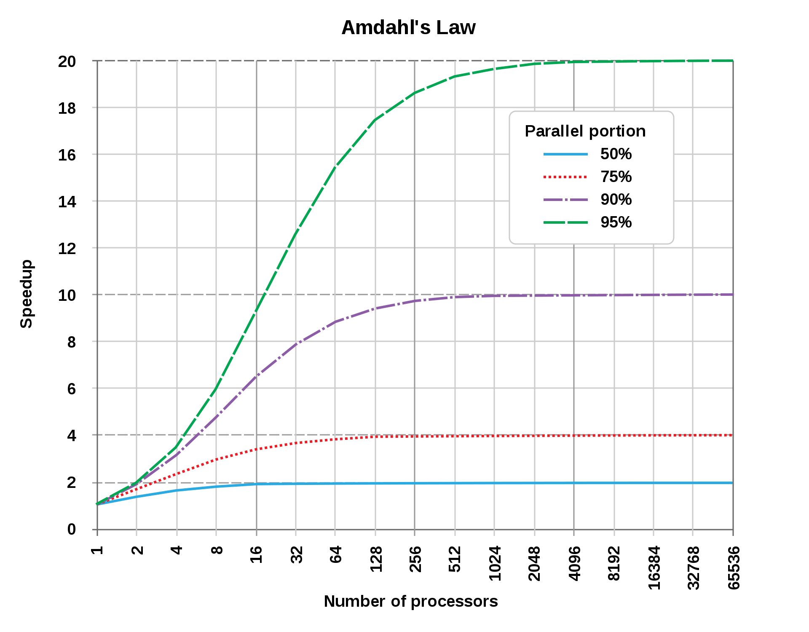
Figure 15: Theoretical speedup from Amdahl’s law for various amounts of parallelisability
This realisation leads to the perhaps unsatisfactory conclusion that the smaller the parallelisable portion of our code, the less performance improvements we can expect from distributed computing. Even if 90% of our application is parallelised, we can still only improve performance by a single order of magnitude.
Exercise
A parallel application has a runtime of 100 seconds running on a computer system with a single 4-core 2 GHz processor. 30% of the application’s runtime is serial, the remaining 70% is parallelised across the available cores.
You are given the choice of two new processors: (A) a 4-core 3 GHz processor; (B) an 8-core 2 GHz processor. Assuming perfect scaling between increased clock speed and increased core counts, which processor would provide the greatest performance improvement?
What would be the runtime on each processor?
Gustafson’s Law
Amdahl’s law assumes that a problem size is fixed, and therefore that the speedup we get through parallelisation is just that the same problem can be executed quicker in parallel. However, with more computation we can also perform bigger (or more accurate) simulations.
Gustafson’s law addresses this shortcoming in Amdahl’s law, by recognising that programmers tend to increase the size of problems to fully exploit the resources available.
\[\begin{align*} S & = s + p \times N \\ & = s + (1 - s) \times N \\ & = N + (1 - N) \times s \end{align*}\]where,
$S$ is the theoretical speedup
$s$ and $p$ are the serial and parallel proportions of the application, where $s + p = 1$
$N$ is the number of processors
An Example
Consider an application in which 10% of the runtime is spent performing serial work, and the application is executed on 64 processes.
\[\begin{align*} S &= 64 + (1 - 64) \times 0.1 \\ &= 57.7 \end{align*}\]Assuming the serialised portion of the application does not grow with parallelisation, application performance can be improved by almost 58$\times$ according to Gustafson’s law.
Exercise
Like before, a parallel application has a runtime of 100 seconds running on a computer system with a single 4-core 2 GHz processor. 30% of the applications runtime is serial, the remaining 70% is parallelised across the available cores.
According to Gustafson’s law, what would the runtime of the application be on a single core? What would the runtime of the application be on an 8-core 2 GHz processor?
The important differentiation between the two laws is that Gustafson’s law assumes that the serial proportion of an application remains fixed, while Amdahl’s law assumes that the serial proportion grows as the application is further parallelised. Generally speaking, Amdahl’s law holds when an application is strongly scaled (i.e. the problem size is fixed, while the number of processors is increased), while Gustafson’s law holds when an application is weakly scaled (the problem size grows proportionally with the increase in number of processors).
Performance Engineering
Maximising performance is paramount in scientific computing. Higher performance means more calculations can be carried out, allowing scientists to increase the size, complexity or resolution of their simulations. The field of High Performance Computing exists to improve the performance of distributed systems and the software running on distributed systems. HPC covers a broad spectrum of disciplines. At one extreme, domain experts write high-level simulation software to model phenomena of interest. At the other, hardware engineers design the processors and other components that make up supercomputers.
Performance engineering is the collection of processes by which an application’s or computing system’s performance is measured, predicted and optimised. This module will be primarily focussed on the discipline of performance engineering, and throughout the remainder of the course you will learn how to:
- Accurately measure and reason about the performance of an application or system
- Execute batch jobs on large scale shared systems
- Exploit the parallelisation available on-core, on-node and off-node
- Build applications for execution on accelerator devices
- Write applications that can target multiple types of hardware from a single codebase
Scientific Computing
Scientific Computing/Computational Science is the application of computer science and software engineering to solve complex problems in science and engineering.
Today, scientific computing is used in fields such as:
- Theoretical Physics
- Plasma Physics
- Astrophysics
- Computational Fluid Dynamics
- Material Sciences
- Biomedicine
- Robotics
- Artificial Intelligence
- Quantum Mechanics
- …
Throughout these fields there are a number of key algorithms or computational patterns that are common.
The Seven Dwarfs
In his 2004 talk, Phillip Colella outlined the seven dwarfs of scientific computing – seven computational motifs that were common in almost all fields of scientific computing.
- Dense Linear Algebra – classic vector and matrix operations
- Sparse Linear Algebra – multiplication involving matrices composed primarily of zeros
- Spectral Methods – spectral domain computations transformed from temporal or spatial domains and solved numerically
- N-Body Methods – calculations that depend on interactions between discrete points
- Structured Grids – computation steps update data in a regular multi-dimensional grid
- Unstructured Grids – computations that depend on neighbours in an irregular grid
- Monte Carlo – applications relying on repeated random sampling to obtain numerical results
Further Reading
Exercise
For each of the following simulation applications investigate which of the 7 dwarfs are present.
- LINPACK
- LS-DYNA
- LAMMPS
- NEK5000
Note: These applications may contain motifs of multiple dwarfs.
The 13 Dwarfs
In recognising the expansion of scientific computing to new domains such as AI, in 2006, 6 additional “dwarfs” were proposed by authors at UC Berkeley, while the final of the seven dwarfs (Monte Carlo) was generalised to MapReduce.
- MapReduce – process subsets of data independently and merge results
- Combinatorial Logic – simple computation on large data sets, exhibiting bit-level parallelism
- Graph Traversal – traverse objects and examine them as they are traversed
- Dynamic Programming – compute solution by solving simpler overlapping subproblems
- Backtrack and Branch-and-Bound – branch-and-bound algorithms used to solve search and global optimisation
- Construct Graphical Models – construct graps that represent random variables as nodes and conditionals as dependancies as edges
- Finite State Machines – interconnected states which transition between one another
Further Reading
These 13 computational methods are broadly representative of many of the applications running on today’s supercomputers around the world. While you may not understand how to solve all of these problems, by the end of this module you should be able to recognise these motifs in applications, and be able to optimise and parallelise some of these methods.
Recommended Reading
- Introduction to High Performance Computing for Scientists and Engineers, Chapter 5 - Basics of parallelization
Recommended Viewing
In 2021, Jack Dongarra recieved the ACM A.M. Turing Award (often referred to as the “Nobel Prize of Computing”) for his pioneering contributions to numerical algorithms and libraries that have enabled high performance computational software to keep pace with exponential hardware improvements for over four decades.
He delivered his Turing Lecture, “A Not So Simple Matter of Software”, at the 2022 Supercomputing Conference.